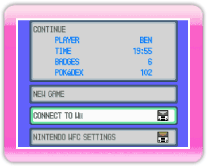
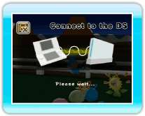
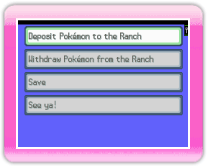

|
12
|
Connect to DS
|
 |
|
You can deposit or withdraw Pokémon you caught in Pokémon Diamond or Pokémon Pearl using the Nintendo DS. Please Note:

Wii screen After you read the warning message, press  . .If the screen on My Pokémon Ranch changes to the one shown below, turn on your DS with a Pokémon Diamond or Pokémon Pearl Game Card inserted. Select "Connect to Wii" in the Pokémon Diamond or Pokémon Pearl main menu. 
DS screen 
Wii screen When you connect Pokémon Diamond or Pokémon Pearl to My Pokémon Ranch, you will find it is easier to connect if you select "Connect to DS" in the My Pokémon Ranch main menu first, and then select "Connect to Wii" in the Pokémon Diamond or Pokémon Pearl main menu. If you successfully connect to the Nintendo DS, the screens below will be displayed on both sides (Wii side & DS side). From here, you'll operate the game with your DS. However, the first time you connect your Nintendo DS, you
will need to choose a Caretaker on the Wii side (My
Pokémon Ranch). (→p.17) DS screen 
Wii screen  DS screen
On the Nintendo DS side, the main menu will be displayed. Make a
selection and press Main
menu on the Nintendo DS side
For how to operate Connect to Nintendo DS after this step, please refer to "13. Deposit Pokémon" or "14. Withdraw Pokémon." Communication Error
While connecting, error messages shown below sometimes pop up. Please reset on both sides (Wii & Nintendo DS), as instructed on each screen. 
DS screen 
Wii screen Wii screen The Ranch data will be saved to the Wii console. * If you erase save data, all of your deposited Pokémon will be deleted and you cannot withdraw them. Once you erase the save data, the data cannot be restored. |
 |
 |
 |